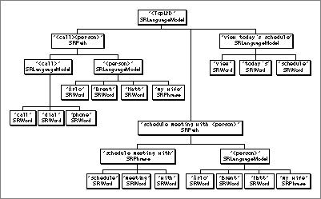

Legacy Document
Important: The information in this document is obsolete and should not be used for new development.
Important: The information in this document is obsolete and should not be used for new development.


Language Models
You specify the words and phrases for which you want the Speech Recognition Manager to listen by defining a language model, which is a list of zero or more words, phrases, or paths. For example, suppose that you want the user to be able to utter commands like "call Arlo" and "schedule a lunch with Brent next Tuesday" (perhaps with other names and days as well). A standard method of specifying language models like this is to display the model in Backus-Naur Form (BNF). Listing 1-1 is a BNF description of a relatively simple language model.Listing 1-1 A BNF description of the language model <TopLM>
<TopLM> = <call> <person> | schedule meeting with <person> |view today's schedule;
<call> = call | phone| dial;
<person> = Arlo | Brent | Matt | my wife;A language model is built using four kinds of objects, collectively called language objects: words, phrases, paths, and language models. A word represents a single speakable word (for example, "dial" in the BNF description). A phrase is a sequence of zero or more words (for example, "view today's schedule" in the BNF description). A path is a sequence of zero or more words, phrases, or language models (for example, "<call> <person>" in the BNF description). Finally, a language model is a list of zero or more words, phrases, or paths (for example, "call | phone | dial" in the BNF description).
By convention, the name of a language model is enclosed in the characters "<" and ">". As you can see, the terms on the left sides of the "=" characters in the BNF description are names of language models. Some of those language models are used in paths that define other language models. The right side of each line in a BNF description is a set of one or more paths. When more than one path occurs, the character "|" (which you can read "or") separates the paths.
Figure 1-3 provides another way, using a hierarchical decomposition, of illustrating the structure of the language model <TopLM> described in Listing 1-1. As you can see, the language model <TopLM> can be decomposed into three component parts: two paths (of type
SRPath) and a phrase (of typeSRPhrase). The path "<call> <person>" is decomposed into two language models (each of typeSRLanguageModel), and the language model <call> is decomposed into three words (of typeSRWord).
Figure 1-3 Structure of the language model <TopLM>
- Note
- In Figure 1-3, some language objects are depicted more than once in the decomposition of the language model <TopLM>. For example, the language model <person> appears twice in the hierarchy. When stored in memory, a language object appears only once, and multiple occurrences of the language object are handled using an object reference, See "Object References" on page 1-8 for complete details.


A language model that does not occur in the definition of any other language model is a top-level language model. A language model that does occur in the definition of some other language model is an embedded language model. In the BNF description given earlier, the language model <TopLM> is a top-level language model and the language model <person> is an embedded language model.
- Note
- See "Building a Language Model," beginning on page 1-18 for sample code that builds a language model.